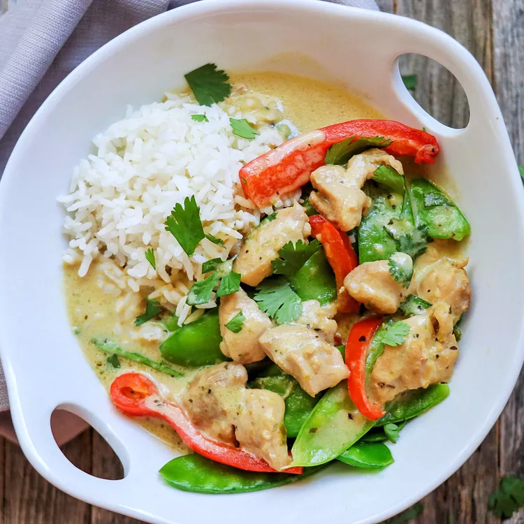

THAI CURRY GREEN

Thai green curry paste is made with aromatic ingredients like cilantro, \
lemongrass, garlic, and chillies, meaning cooking up a pot of green curry
will fill your home with a lovely scent.
Ingredients
- 2 tablespoons peanut oil
- ¼ cup Thai green curry paste
- 3 cloves garlic, minced
- 1 (1/4 inch thick) slice ginger, finely grated
- 2 boneless, skinless chicken breasts, thinly sliced
- 1 (15 ounce) can baby corn pieces, drained
- 1 (8 ounce) can bamboo shoots, drained
- 2 (13.5 ounce) cans coconut milk
- 2 tablespoons fish sauce
- 2 tablespoons palm sugar
- 6 makrut lime leaves
- 1 red bell pepper, cut into thin strips
- 1 orange bell pepper, cut into thin strips
- ¼ cup thinly sliced Thai basil, or more to taste
Recipes
- Heat oil in a wok until it starts to shimmer. Add curry paste, garlic, and ginger;
stir together and fry until fragrant, 2 to 3 minutes. Add chicken breast slices, stirring until coated.
Cook until just slightly pink in the center, 3 to 5 minutes.
- While chicken is cooking, place baby corn and bamboo shots in a small saucepan, cover with water,
and place over high heat. Bring to a boil. Drain then cover with water again.
- Pour coconut milk into the wok. Bring to a slow simmer,
stirring occasionally, about 5 minutes. Drain corn and bamboo shoots and add in.
Stir in fish sauce, palm sugar, and lime leaves. Bring back up to a simmer and cook for 5 minutes.
Stir in bell pepper strips and cook until crisp-tender, about 3 minutes.
- Remove curry from heat and stir in Thai basil.